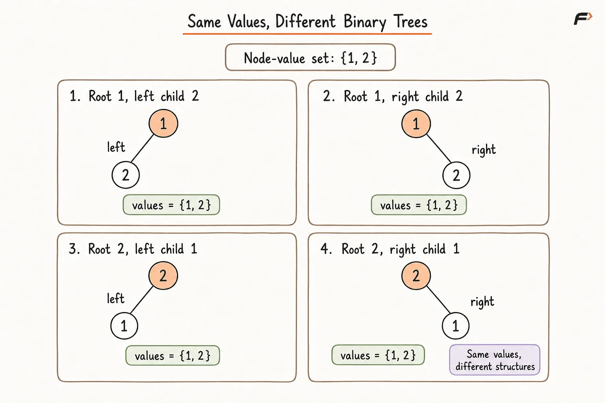
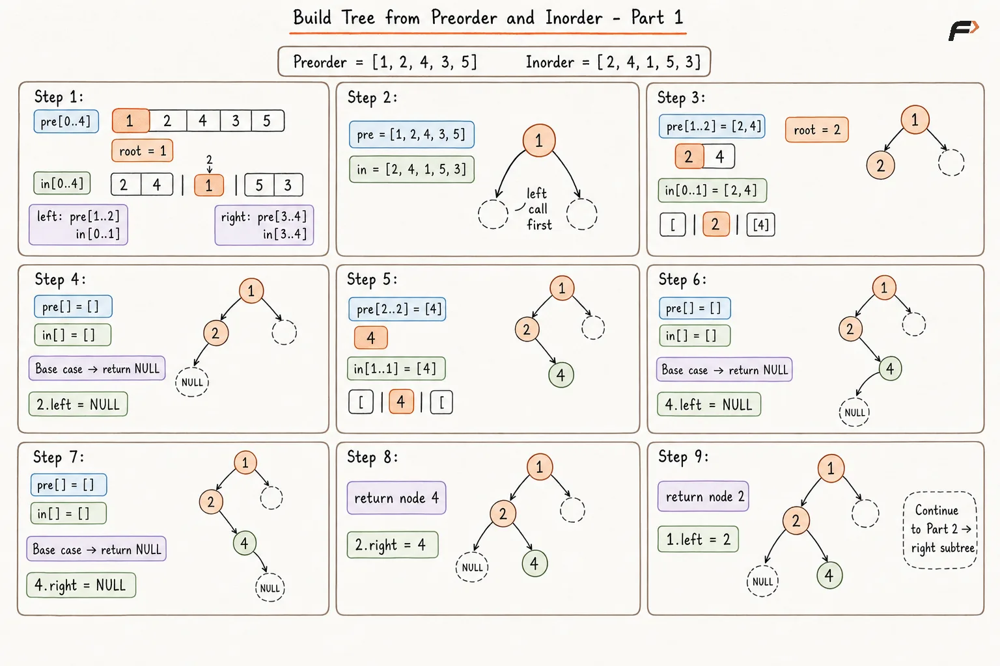
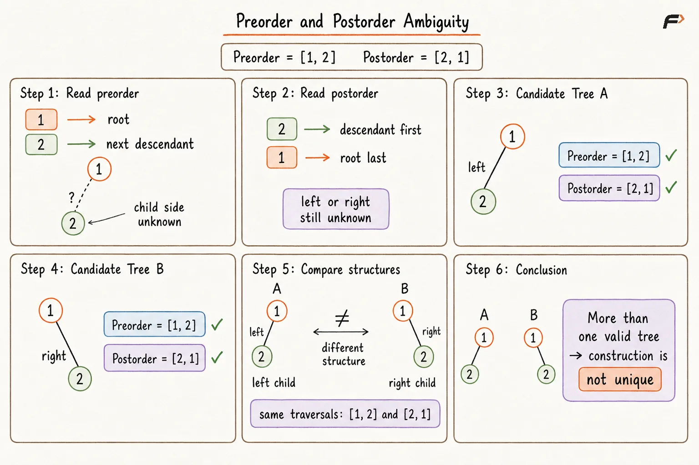
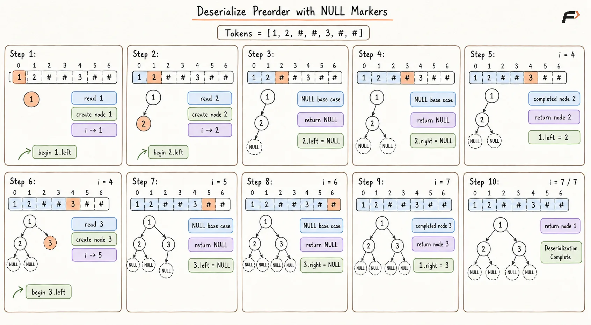
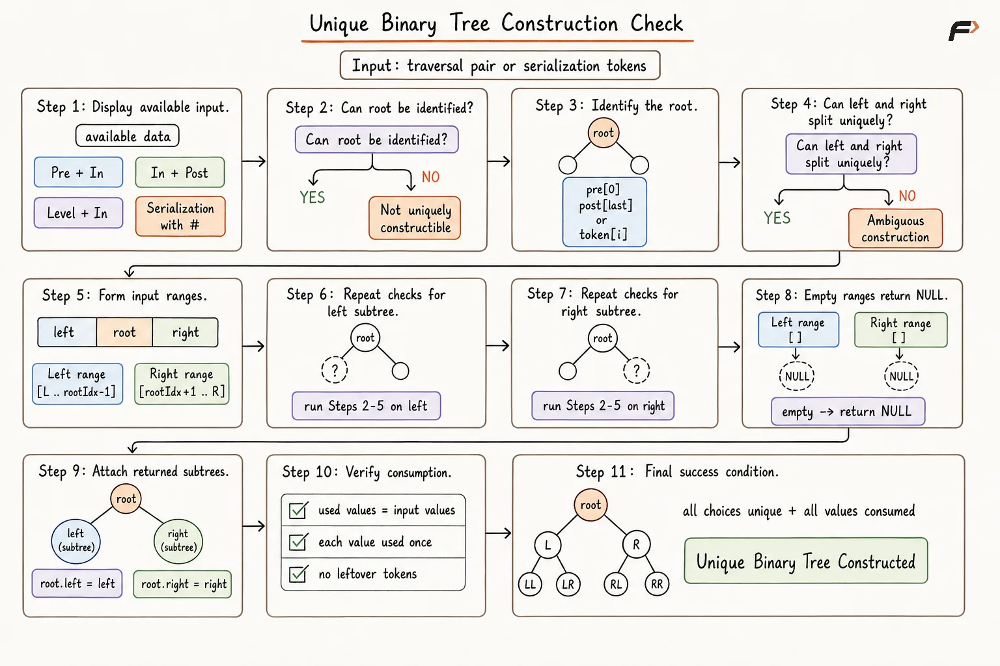

Requirements needed to construct a unique Binary Tree
Requirements to Construct a Unique Binary Tree
Constructing a binary tree means creating its nodes and determining exactly which node is the:
Root
Left child
Right child
Member of the left subtree
Member of the right subtree
However, knowing only the values stored in the tree is not enough to determine these relationships.
Consider two nodes with values 1 and 2. They can form several different binary trees:
Node
1can be the root with2as its left child.Node
1can be the root with2as its right child.Node
2can be the root with1as its left child.Node
2can be the root with1as its right child.
All four trees contain the same values, but their structures are different.
Therefore, constructing a valid tree and constructing the unique original tree are not the same.
A tree can be constructed when at least one arrangement satisfies the given information. A tree can be constructed uniquely only when exactly one arrangement satisfies all the provided information.

Same Values , Different Binary Trees .png
What Does Unique Construction Mean?
A binary tree is uniquely constructible when the provided information determines exactly one possible tree.
The available information must reveal:
Which node is the root
Which nodes belong to the left subtree
Which nodes belong to the right subtree
The internal structure of both subtrees
Whether a child position is empty
Whether a node is a left or right child
If two or more different trees satisfy the same input, the construction is ambiguous.
For example:
Preorder = [1, 2]
Preorder tells us that 1 is visited before 2, but it does not tell us whether 2 is the left or right child of 1.
Both possible trees produce:
Preorder = [1, 2]
Therefore, an ordinary preorder traversal alone does not uniquely determine an arbitrary binary tree.
Basic Requirements for Unique Construction
Unique binary-tree construction generally requires the following information.
A Way to Identify the Root
The root of every subtree must be identifiable.
Different traversals provide the root at different positions:
Preorder places the root first.
Postorder places the root last.
Level order places the root before all nodes below it.
Inorder does not directly identify the root.
Identifying the root alone is insufficient. The remaining nodes must also be divided between the left and right subtrees.
A Way to Divide the Left and Right Subtrees
Once the root is identified, the construction method must determine which nodes belong on each side.
Inorder traversal provides this division:
Left Subtree → Root → Right Subtree
After locating the root in inorder:
Values before the root belong to the left subtree.
Values after the root belong to the right subtree.
This is why inorder is commonly paired with preorder, postorder, or level order.
Uniquely Identifiable Nodes
Standard reconstruction methods usually assume that all node values are distinct.
If a value appears multiple times, the selected root may match several inorder positions. Different positions can divide the remaining values differently and produce different trees.
When duplicates are allowed, the input requires additional information such as:
Unique node identifiers
Occurrence numbers
Explicit structural markers
Parent-child relationships
A clearly defined occurrence-selection rule
Consistent Traversal Data
All supplied traversals must describe the same collection of nodes.
For example:
Preorder = [1, 2, 3]
Inorder = [2, 1, 4]
These traversals cannot belong to the same tree because the first contains 3, while the second contains 4.
Valid traversal pairs should have:
The same number of nodes
The same values
The same frequency of every value
An ordering that can describe a valid binary tree
Sufficient Structural Information
The input must preserve enough information to distinguish left and right child positions.
This information may come from:
Inorder combined with a root-identifying traversal
Complete
NULLmarkersExplicit parent-child relationships
A known fixed tree shape
Structural restrictions such as BST or full-tree properties
Why Is Inorder Traversal Important?
Inorder traversal follows:
Left → Root → Right
Suppose the root of a subtree is R. Its inorder traversal has the form:
[Left Subtree] R [Right Subtree]
Once another traversal identifies R, inorder separates the remaining nodes into the two subtrees.
Consider:
Preorder = [1, 2, 4, 3, 5]
Inorder = [2, 4, 1, 5, 3]
Preorder identifies 1 as the root because 1 appears first.
Find 1 in inorder:
[2, 4] | 1 | [5, 3]
Therefore:
Nodes
2and4belong to the left subtree.Nodes
5and3belong to the right subtree.
The same reasoning can then be applied recursively to both sides.
Inorder acts as the subtree divider, while preorder, postorder, or level order identifies the next root.
Can Inorder Alone Construct a Unique Tree?
No. Inorder reveals the relative left-root-right order, but it does not identify which value should be selected as the root.
Consider:
Inorder = [1, 2, 3]
One valid tree can have 2 as its root, with 1 on the left and 3 on the right.
Another valid tree can be completely right-skewed:
1 → 2 → 3
A third valid tree can be completely left-skewed with 3 as the root.
All of them produce:
Inorder = [1, 2, 3]
Therefore, inorder generally needs another traversal or structural rule that identifies the root of every subtree.
Preorder and Inorder
Preorder follows:
Root → Left → Right
Inorder follows:
Left → Root → Right
When all nodes are uniquely identifiable, preorder and inorder uniquely determine a binary tree.
Why Does This Combination Work?
The first preorder value identifies the root.
The root’s inorder position separates the left and right subtrees.
The size of the left inorder segment determines how many preorder values belong to the left subtree.
The remaining preorder values belong to the right subtree.
The same reasoning is repeated recursively.
Algorithm
Select the first value in the current preorder range as the subtree root.
Locate that root inside the current inorder range to determine the left and right sections.
Calculate the size of the left subtree from the inorder boundaries.
Recursively construct the left subtree using its corresponding preorder and inorder ranges.
Recursively construct the right subtree using the remaining ranges.
Connect both returned subtrees to the root and return the completed subtree.
Complete Dry Run: Preorder and Inorder

Diagram 1
Complexity of Preorder and Inorder Construction
If the inorder traversal is searched linearly during every recursive call, construction can take:
O(N²)
This happens in a skewed tree because nearly the complete inorder range may be searched repeatedly.
The search can be optimized by storing:
Node value → Inorder index
Each root position can then be found in O(1) average time.
With this mapping:
Time Complexity: O(N)
Space Complexity: O(N) for the inorder-position mapping and up to O(N) recursion-stack space in the worst case.
Postorder and Inorder
Postorder follows:
Left → Right → Root
Inorder follows:
Left → Root → Right
When nodes are uniquely identifiable, postorder and inorder also uniquely determine a binary tree.
Why Does This Combination Work?
The last postorder value identifies the root.
The root’s inorder position separates the left and right subtrees.
While reading postorder backward, the right-subtree values appear before the left-subtree values.
Therefore, the right subtree must generally be constructed before the left subtree.
Algorithm
Select the last unused postorder value as the current root.
Locate the root in the current inorder range.
Use the inorder section after the root for the right subtree.
Use the inorder section before the root for the left subtree.
Construct the right subtree before the left while consuming postorder backward.
Attach both returned subtrees and return the root.
With an inorder-position map:
Time Complexity: O(N)
Space Complexity: O(N) in the worst case.
Level Order and Inorder
Level-order traversal visits nodes from top to bottom.
When nodes are uniquely identifiable, level order combined with inorder can also uniquely determine a binary tree.
The first level-order value is the root. Its position in inorder divides the nodes into the left and right subtrees.
The remaining level-order values are filtered according to whether they occur in the left or right inorder section. The first value in each filtered sequence becomes the root of that subtree.
This combination is valid, although its implementation is generally less direct than preorder with inorder or postorder with inorder.
Traversal Combinations That Uniquely Construct a Tree
Given Information | Unique Construction? | Requirement |
|---|---|---|
Preorder and inorder | Yes | Nodes must be uniquely identifiable |
Postorder and inorder | Yes | Nodes must be uniquely identifiable |
Level order and inorder | Yes | Nodes must be uniquely identifiable |
Preorder with complete | Yes | Every missing child position must be recorded |
Postorder with complete | Yes | Every missing child position must be recorded |
Level order with positional | Yes | Internal missing positions must be preserved |
Preorder and postorder | No, in general | Additional structural restrictions are required |
A single ordinary traversal | No, in general | Complete structural information is missing |
Why Preorder and Postorder Are Not Sufficient
Preorder identifies the root first:
Root → Left → Right
Postorder identifies the root last:
Left → Right → Root
However, neither traversal directly separates the left and right sides.
Consider:
Preorder = [1, 2]
Postorder = [2, 1]
These traversals tell us:
1is the root.2is a descendant of1.
They do not tell us whether 2 is the left child or right child.
Both structures satisfy the same traversal pair, so the tree is not unique.

Preorder and Postorder Ambiguity .png
When Can Preorder and Postorder Be Sufficient?
Preorder and postorder can uniquely construct a tree when an additional structural restriction removes the one-child ambiguity.
The most common restriction is that the tree is a full binary tree.
A full binary tree is a tree in which every node has:
Zero children, or
Exactly two children
No node is allowed to have only one child.
This rule removes the ambiguity of deciding whether a single child belongs on the left or right.
Therefore, preorder and postorder uniquely determine a full binary tree when all nodes are uniquely identifiable.
Constructing a Full Tree from Preorder and Postorder
Consider:
Preorder = [1, 2, 4, 5, 3, 6, 7]
Postorder = [4, 5, 2, 6, 7, 3, 1]
From preorder:
1is the root.2is the next value, so it is the root of the left subtree.
Find 2 in postorder:
[4, 5, 2]
This section contains the complete left subtree. The remaining values before root 1 belong to the right subtree.
Because the tree is full, node 1 must have both children. The next preorder value cannot be treated as an optional single child.
The same division is repeated recursively until the complete tree is constructed.
Can One Traversal Ever Be Sufficient?
Yes, but an ordinary traversal containing only values is generally insufficient.
One traversal becomes sufficient when it also contains complete structural information.
Preorder with NULL Markers
Consider:
1, 2, #, #, 3, #, #
The traversal follows:
Root → Left → Right
Every # records a missing child position.
The complete sequence uniquely describes:
Root
1Left child
2Right child
3No additional children
Complete Deserialization Dry Run
Start with token index 0.
Step 1: Read Root 1
Read token 1.
Create node 1 and move to the next token.
Now construct its left subtree.
Step 2: Read Node 2
Read token 2.
Create node 2 and move to the next token.
Now construct its left subtree.
Step 3: Read the First NULL Marker
Read #.
Return NULL and attach:
2.left = NULL
Step 4: Read the Second NULL Marker
Read the next #.
Return NULL and attach:
2.right = NULL
Return completed node 2 and attach:
1.left = 2
Step 5: Read Node 3
Read token 3.
Create node 3 and move to the next token.
Now construct its left subtree.
Step 6: Read the Third NULL Marker
Read #.
Return NULL and attach:
3.left = NULL
Step 7: Read the Fourth NULL Marker
Read the final #.
Return NULL and attach:
3.right = NULL
Return node 3 and attach:
1.right = 3
Step 8: Return the Root
All tokens have been consumed.
Return node 1 as the root of the reconstructed tree.

Deserialize Preorder with NULL Markers.png
Postorder with NULL Markers
Postorder with complete NULL markers can also uniquely represent a tree.
Postorder follows:
Left → Right → Root
During reconstruction, the sequence is generally read from right to left:
Create the root.
Construct the right subtree.
Construct the left subtree.
The NULL markers determine exactly where recursion should stop.
Level Order with NULL Markers
Level order can uniquely describe a binary tree when missing child positions are retained.
For example:
[1, 2, 3, NULL, 4, 5, NULL]
The internal NULL marker records that node 2 has no left child.
If that marker were removed, node 4 could incorrectly become the left child of 2, changing the tree’s structure.
Trailing NULL markers may be removed only if the serialization format clearly defines every omitted trailing position as empty.
Internal NULL markers must remain.
Are NULL Markers with Inorder Alone Sufficient?
Not necessarily.
Consider two trees:
Tree 1 has root
1with left child2.Tree 2 has root
2with right child1.
If an ordinary inorder sequence records NULL child positions without additional subtree boundaries, both trees can produce:
#, 2, #, 1, #
The sequence still does not clearly identify the overall root.
Therefore, preorder, postorder, and level-order formats are more suitable for single-traversal serialization.
An inorder-based representation requires additional boundaries, parentheses, or other structural metadata.
Effect of Duplicate Values
The standard uniqueness guarantees assume that every node is uniquely identifiable.
Consider:
Preorder = [1, 2, 2]
Inorder = [2, 1, 2]
The first preorder value identifies 1 as the root. However, repeated values can make later root matches ambiguous.
A mapping such as:
Value → Inorder index
is also insufficient because one value may correspond to multiple indices.
To handle duplicates safely, the input may provide:
Unique node identifiers
Value-occurrence pairs
All inorder positions for each value
Complete
NULLmarkersExplicit parent-child relationships
Another rule that distinguishes repeated nodes
Duplicate values do not prevent a tree from existing. They prevent traversal values alone from guaranteeing which occurrence represents each node.
Structural Restrictions That Can Restore Uniqueness
Additional information about the tree type can make otherwise insufficient input usable.
Binary Search Tree
For a Binary Search Tree with distinct values:
Preorder alone can uniquely reconstruct the tree.
Postorder alone can uniquely reconstruct the tree.
The BST ordering rule divides values into smaller and larger subtrees.
Inorder alone is insufficient because it only gives the values in sorted order without identifying the shape.
Full Binary Tree
For a full binary tree with uniquely identifiable nodes:
Preorder and postorder together uniquely determine the tree.
The rule that every internal node has two children removes the one-child ambiguity.
Complete Binary Tree
If the tree is known to be complete and its level-order values are provided, its shape is determined by left-to-right filling.
Therefore, level order uniquely determines the tree.
Perfect Binary Tree
If the tree is guaranteed to be perfect, its complete structure is already known. The traversal values determine which value occupies each fixed position.
Uniqueness therefore depends on both:
The supplied traversal information
The known structural properties of the tree
Complete Decision Table
Input Information | Arbitrary Binary Tree | Additional Requirement for Uniqueness |
|---|---|---|
Preorder only | Not unique | BST rule, fixed shape, or complete structural markers |
Inorder only | Not unique | The complete structure must already be known |
Postorder only | Not unique | BST rule, fixed shape, or complete structural markers |
Level order without | Not unique | A known positional shape is required |
Preorder and inorder | Unique | Nodes must be uniquely identifiable |
Postorder and inorder | Unique | Nodes must be uniquely identifiable |
Level order and inorder | Unique | Nodes must be uniquely identifiable |
Preorder and postorder | Not unique | Unique for a full binary tree with identifiable nodes |
Preorder with | Unique | Every missing child must be recorded |
Postorder with | Unique | Every missing child must be recorded |
Level order with | Unique | Internal missing positions must be preserved |
BST preorder | Unique | BST ordering and distinct keys |
BST postorder | Unique | BST ordering and distinct keys |
How to Check Whether Reconstruction Is Possible
Before constructing a tree from traversal sequences, validate the input.
Validation Requirements
Both traversals must contain the same number of nodes.
Both must contain the same values with identical frequencies.
Every selected root must exist inside the corresponding inorder range.
Every calculated subtree size must remain valid.
Every traversal element must be consumed exactly once.
No unexpected element should remain after construction.
Duplicate values must be handled through unique identities or an agreed rule.
Matching lengths and frequencies are necessary checks, but they do not always prove that the traversal ordering is valid. The recursive construction must also finish without contradiction.
Mental Model for Unique Construction
For every subtree, ask three questions:
Which Node Is the Root?
Preorder, postorder, level order, a BST rule, or another structural rule should answer this.
Which Nodes Belong to the Left and Right Subtrees?
Inorder, NULL markers, parent-child information, or a known tree shape should answer this.
Can the Same Decision Be Repeated?
The supplied information must continue identifying the root and subtree boundaries at every lower level.
If every step has exactly one valid choice, the tree is unique.
If any step allows multiple valid choices, the tree is ambiguous.

Unique Binary Tree Construction Check.png
Applications
Unique-construction requirements are important in:
Constructing trees from traversal arrays
Serializing and deserializing binary trees
Rebuilding syntax and expression trees
Validating encoded tree data
Restoring stored hierarchical structures
Solving tree-reconstruction interview problems
Detecting incomplete or ambiguous input
Designing reliable serialization formats
Reconstructing Binary Search Trees
Working with full, complete, and perfect binary trees
Common Mistakes
Assuming any two traversals always uniquely determine a binary tree.
Forgetting that one traversal usually needs to be inorder.
Assuming preorder and postorder are sufficient for an arbitrary binary tree.
Ignoring single-child ambiguity in preorder and postorder.
Using the full-tree guarantee without confirming that every internal node has two children.
Assuming node values are distinct when duplicates are allowed.
Mapping a duplicated value to only one inorder index.
Treating matching traversal lengths as proof that the traversals are valid.
Forgetting to compare the values and frequencies in both traversals.
Removing internal
NULLmarkers from a serialized representation.Assuming inorder with unstructured
NULLmarkers always reveals the root.Using BST reconstruction rules for an ordinary binary tree.
Confusing full, complete, and perfect binary trees.
Constructing one valid tree without checking whether other valid trees are possible.
Repeatedly searching inorder and unintentionally creating an
O(N²)solution.
FAQs
Q1. What is the standard minimum information needed to uniquely construct an arbitrary binary tree?
With uniquely identifiable nodes, preorder and inorder or postorder and inorder are the standard combinations. Level order and inorder can also uniquely determine the tree.
Q2. Why is inorder commonly required for unique reconstruction?
Inorder places the root between its left and right subtrees. Once another traversal identifies the root, inorder reveals the exact subtree division.
Q3. When do preorder and postorder uniquely determine a binary tree?
They uniquely determine the tree when additional restrictions remove single-child ambiguity. The standard case is a full binary tree with uniquely identifiable nodes.
Q4. Can a single traversal uniquely represent a binary tree?
Yes, if it includes complete structural information. Preorder or postorder with a marker for every missing child can uniquely represent an arbitrary binary tree.
Q5. What changes when duplicate node values are present?
Traversal values may no longer identify a unique inorder position. Unique node identifiers, occurrence information, or additional structural data is required to guarantee uniqueness.
Q6. Is level order alone sufficient to construct a unique tree?
Not for an arbitrary binary tree if missing positions are omitted. It becomes sufficient when internal NULL positions are preserved or when the tree has a known shape, such as a complete binary tree.